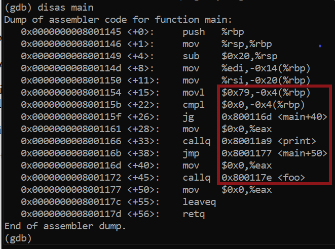
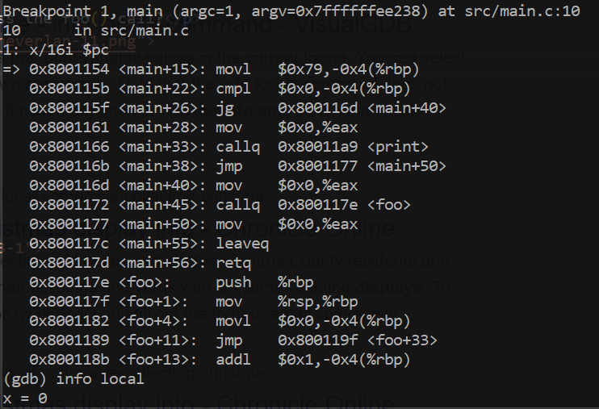
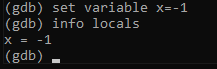
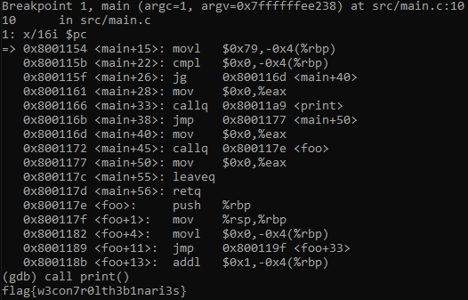

NeverLAN CTF 2020 writeup
Jeong Min Lim
Reverse Engineering Challenges
1. Reverse Engineer

-
main
-
foo
-
print
movb $0x66,-0x1(%rbp)
movb $0x6c,-0x2(%rbp)
movb $0x61,-0x3(%rbp)
movb $0x67,-0x4(%rbp)
movb $0x7b,-0x5(%rbp)
movb $0x7d,-0x6(%rbp)
movb f,-0x1(%rbp)
movb l,-0x2(%rbp)
movb a,-0x3(%rbp)
movb g,-0x4(%rbp)
movb {,-0x5(%rbp)
movb },-0x6(%rbp)
print (continued)
mov $0x15,%edi
callq 1040 <malloc@plt>
mov %rax,-0x10(%rbp)
mov -0x10(%rbp),%rax
movb $0x77,(%rax)
mov -0x10(%rbp),%rax
add $0x1,%rax
movb $0x33,(%rax)
mov -0x10(%rbp),%rax
add $0x2,%rax
movb $0x63,(%rax)
mov -0x10(%rbp),%rax
add $0x3,%rax
movb $0x6f,(%rax)
...
print (continued)
mov $0x15,%edi
callq 1040 <malloc@plt>
mov %rax,-0x10(%rbp)
mov -0x10(%rbp),%rax
movb w,(%rax)
mov -0x10(%rbp),%rax
add $0x1,%rax
movb 3,(%rax)
mov -0x10(%rbp),%rax
add $0x2,%rax
movb c,(%rax)
mov -0x10(%rbp),%rax
add $0x3,%rax
movb o,(%rax)
...
How to bypass the foo() call?
Look for variables
main()
if x > 0:
foo() // segfault
else:
print() // prints the flag

flag{w3con7r01th3b1nari3s}
Call the function directly
